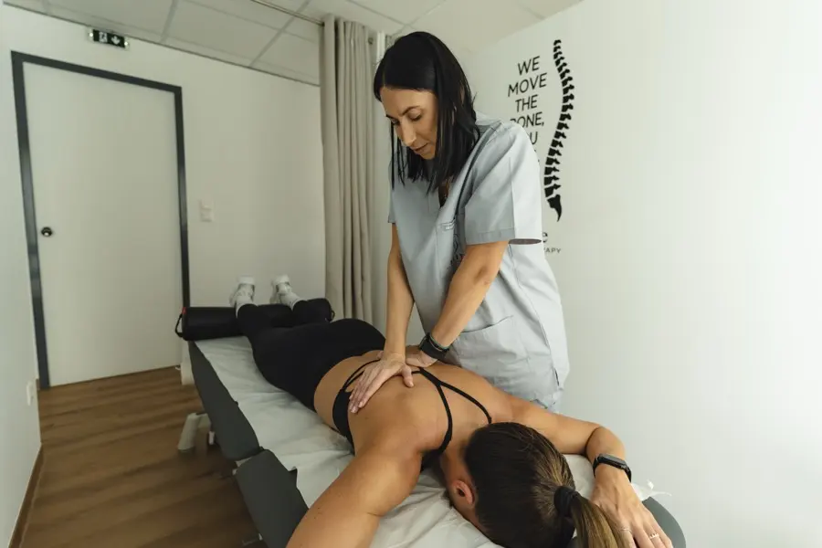
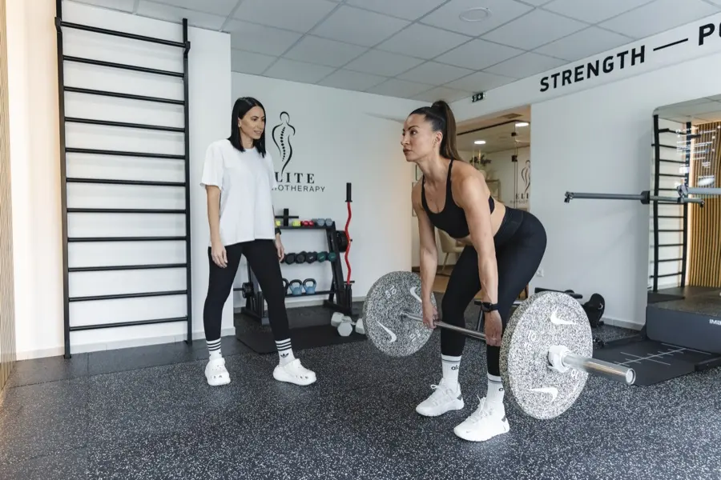
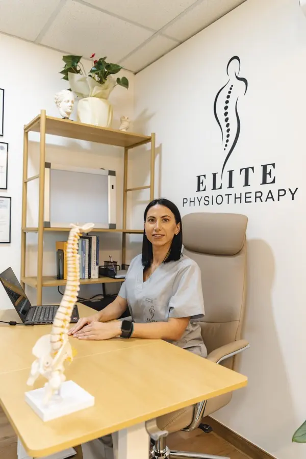
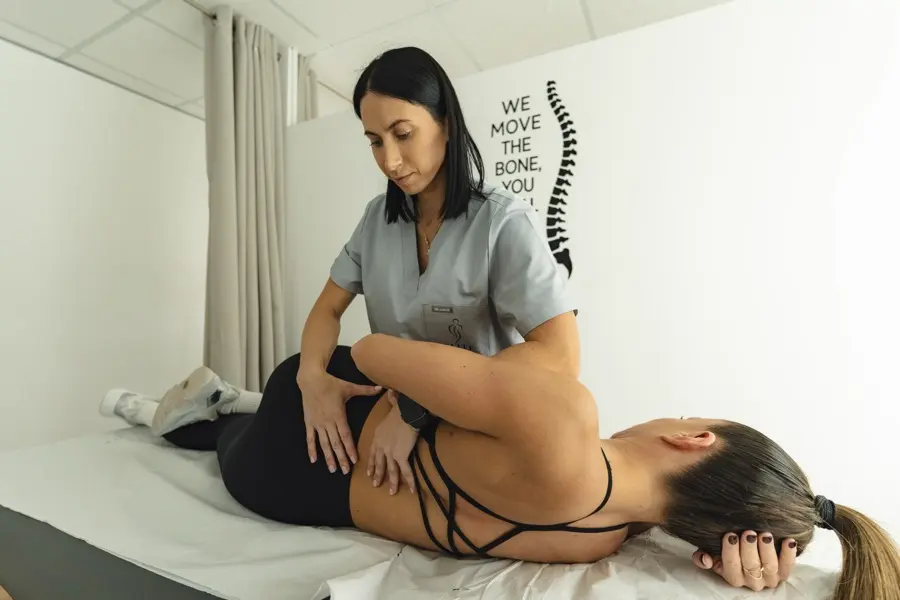
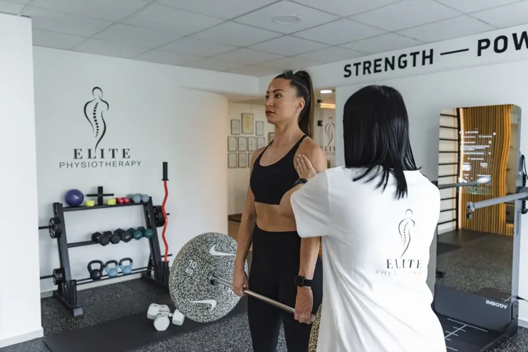
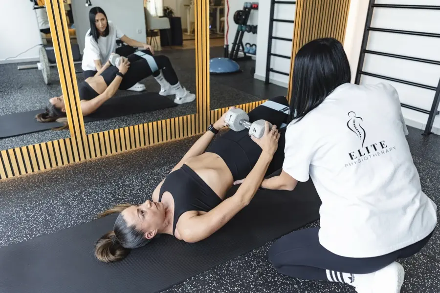
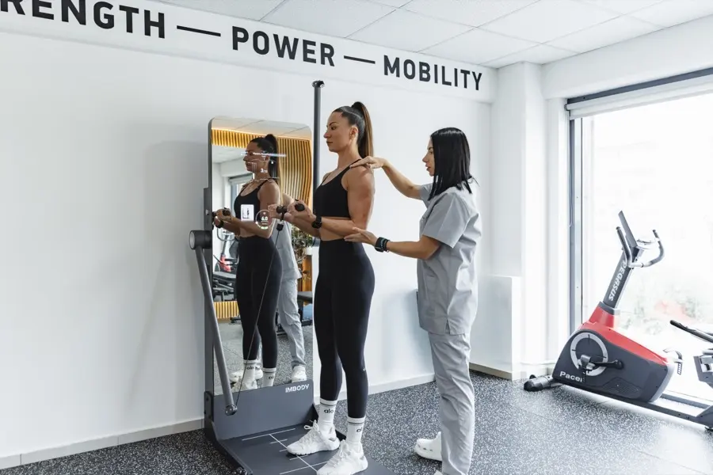
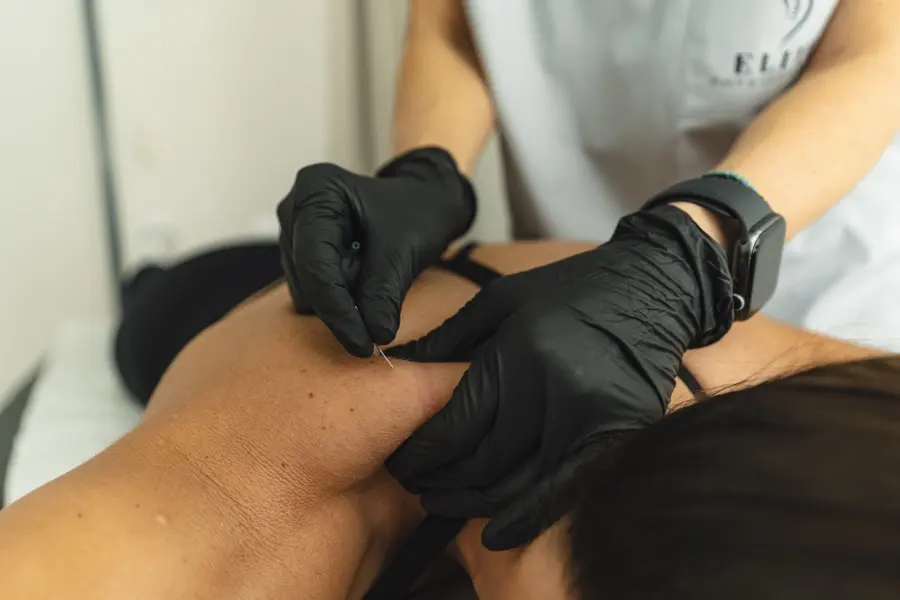
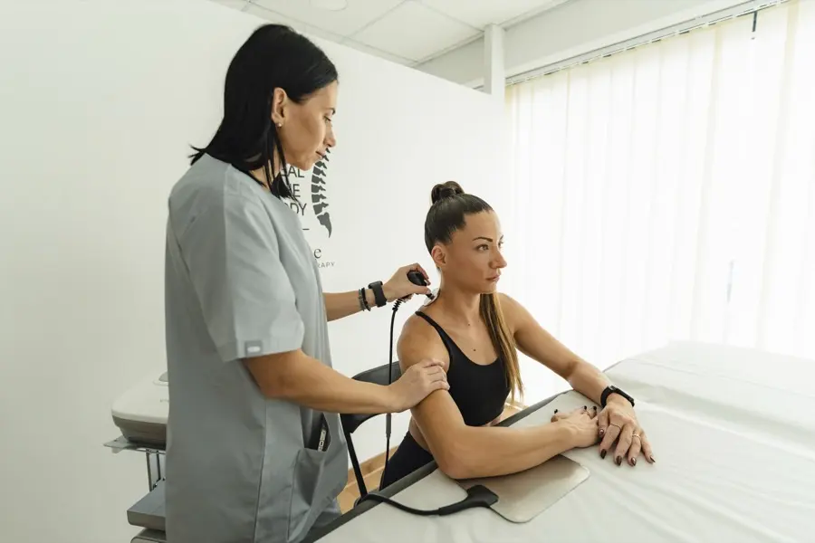
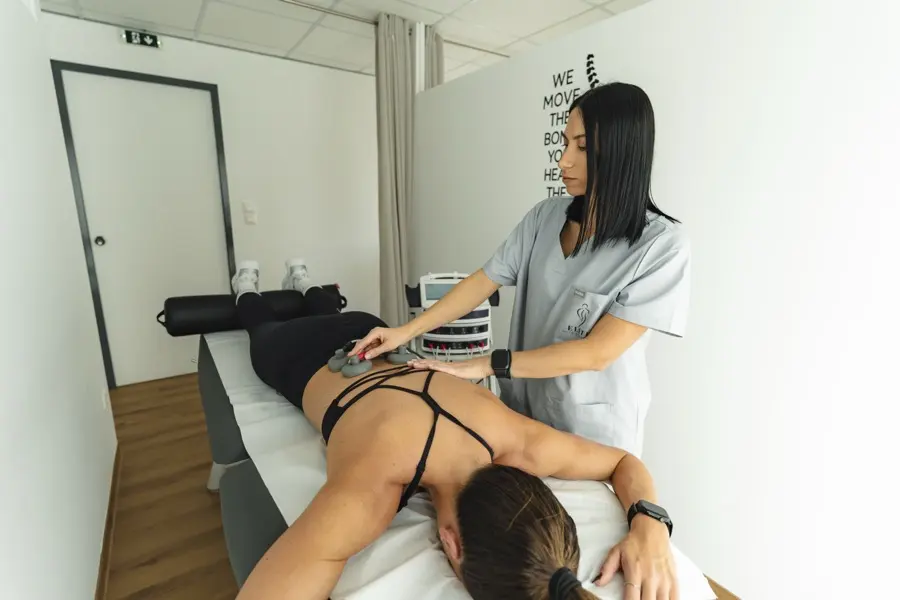

Κέντρο Φυσικοθεραπείας & Αποκατάστασης
Elite Physiotherapy
by Tatiana Gkouwir
Σύγχρονο κέντρο φυσικοθεραπείας και αποκατάστασης, με εξειδικευμένες θεραπείες σε μυοσκελετικά και νευρολογικά προβλήματα — λεπτομερής αξιολόγηση, κλινικός συλλογισμός και ένα πλάνο φτιαγμένο για τη δική σας περίπτωση.



Συλλόγου Φυσικοθεραπευτών
Η Φυσικοθεραπεύτρια
Τατιάνα Γκουβίρ, Φυσικοθεραπεύτρια
Πτυχιούχος Φυσικοθεραπείας Α.Τ.Ε.Ι.Θ. · Μέλος Π.Σ.Φ.
- Πτυχιούχος του τμήματος Φυσικοθεραπείας του Αλεξάνδρειου Τεχνολογικού Εκπαιδευτικού Ιδρύματος Θεσσαλονίκης (Α.Τ.Ε.Ι.Θ., 2017).
- Μέλος του Πανελληνίου Συλλόγου Φυσικοθεραπευτών.
- Κλινική εμπειρία σε ιδιωτικά κέντρα φυσικοθεραπείας, με κύριο αντικείμενο τις αθλητικές κακώσεις και τις εξειδικευμένες τεχνικές αντιμετώπισής τους.
- Μετεκπαίδευση στο Manual Therapy από τον Σύλλογο Φυσικοθεραπευτών & Χειροθεραπευτών Ελλάδος (A.M.P.G.).
- Πιστοποιήσεις σε Mulligan Therapy και Dry Needling (David G. Simons Academy).
- BSPTS – Concept by Rigo για τη σκολίωση και τις παθήσεις της σπονδυλικής στήλης.
Ο χώρος μας
Ένας χώρος φτιαγμένος
για την αποκατάσταση
Γραφείο αξιολόγησης, χώροι θεραπείας και πλήρως εξοπλισμένο γυμναστήριο θεραπευτικής άσκησης, κάτω από την ίδια στέγη.
Υπηρεσίες
Εξειδικευμένη αποκατάσταση,
σε κάθε φάση
Από τον οξύ μυοσκελετικό πόνο και τις αθλητικές κακώσεις, έως τη μετεγχειρητική αποκατάσταση, τη σκολίωση και τα ειδικά περιστατικά.

01Μυοσκελετικός πόνος
Αντιμετώπιση οξέος και χρόνιου πόνου στη σπονδυλική στήλη και στα άκρα, με συνδυασμό χειροθεραπείας, εξειδικευμένων μέσων και θεραπευτικής άσκησης.
Μάθετε περισσότερα →
02Αθλητικές κακώσεις
Αποκατάσταση τραυματισμών και ασφαλής επιστροφή στην αθλητική δράση, με σταδιακή φόρτιση και αντικειμενικά κριτήρια επανένταξης.
Μάθετε περισσότερα →
03Μετεγχειρητική αποκατάσταση
Δομημένο πρόγραμμα αποκατάστασης μετά από χειρουργική επέμβαση, σε συνεννόηση με τις οδηγίες του χειρουργού και με σεβασμό στους χρόνους επούλωσης.
Μάθετε περισσότερα → 04Θεραπευτική άσκηση
Medical Training Therapy — στοχευμένο πρόγραμμα σωματικής άσκησης για τη βελτίωση του κινητικού ελλείμματος, της ιδιοδεκτικότητας και της ισορροπίας.
Μάθετε περισσότερα →
05Σκολίωση & σπονδυλική στήλη
Ειδικές φυσικοθεραπευτικές ασκήσεις για τη σκολίωση (PSSE) και αντιμετώπιση των παθήσεων της σπονδυλικής στήλης, με βάση την εκπαίδευση BSPTS – Concept by Rigo.
Μάθετε περισσότερα → 06
06
Νευρολογικά & λεμφοίδημα
Φυσικοθεραπευτική αντιμετώπιση λεμφοιδήματος και θεραπευτική προσέγγιση σε νευρολογικές παθήσεις, όπως η σκλήρυνση κατά πλάκας.
Μάθετε περισσότερα →Η προσέγγισή μας
Τέσσερα καθαρά βήματα
Αξιολόγηση
Αναλυτικό ιστορικό, κλινική εξέταση και λειτουργικοί έλεγχοι.
Κλινικός συλλογισμός
Ερμηνεία των ευρημάτων και επιλογή των κατάλληλων τεχνικών.
Θεραπεία
Χειροθεραπεία, εξειδικευμένα μέσα και θεραπευτική άσκηση.
Επανένταξη
Σταδιακή φόρτιση, πρόληψη υποτροπών και επιστροφή στη δράση.
Η λεπτομερής αξιολόγηση και ο κλινικός συλλογισμός αποτελούν τις βάσεις με τις οποίες ο θεραπευόμενος θα λάβει το βέλτιστο εξατομικευμένο πλάνο αποκατάστασης.Elite Physiotherapy
Θεραπείες & Τεχνικές
Σύγχρονα μέσα,
επιλεγμένα με κριτήριο
Κάθε τεχνική επιλέγεται με βάση την αξιολόγηση — όχι ως πακέτο, αλλά ως απάντηση σε ένα συγκεκριμένο εύρημα.
Manual Therapy
Εξειδίκευση της φυσικοθεραπείας για την αποκατάσταση των νευρο-μυο-σκελετικών προβλημάτων, βασισμένη στον κλινικό συλλογισμό και σε εξειδικευμένες τεχνικές προσέγγισης.
Μάθετε περισσότερα → 02
02
Mulligan Therapy
Εξειδικευμένη τεχνική κινητοποίησης που συνδυάζει παθητική κινητοποίηση από τον θεραπευτή με ενεργητική κίνηση από τον θεραπευόμενο.
Μάθετε περισσότερα →
03Dry Needling
Τεχνική ξηράς βελόνας για την αντιμετώπιση του μυοπεριτονιακού πόνου και την απενεργοποίηση των σημείων πυροδότησης (trigger points).
Μάθετε περισσότερα →
04Tecar Therapy
Θεραπεία με ραδιοσυχνότητες που επανενεργοποιεί τους μηχανισμούς αυτο-ίασης του οργανισμού — ανώδυνη, μη επεμβατική τεχνική.
Μάθετε περισσότερα → 05
05
Κρουστικός υπέρηχος (Shockwave)
Σύγχρονη μη επεμβατική θεραπεία που μεταφέρει ακουστικό κύμα υψηλής ενέργειας σε επώδυνα σημεία, ενεργοποιώντας τις διαδικασίες επούλωσης και αναγέννησης των ιστών.
Μάθετε περισσότερα → 06
06
Kinesiotaping Therapy
Αυτοκόλλητες ελαστικές ταινίες που παρέχουν υποστήριξη και σταθερότητα σε μύες και αρθρώσεις, χωρίς να περιορίζουν το εύρος κίνησης.
Μάθετε περισσότερα → 07
07
Διαμαγνητική αντλία
Μη επεμβατική θεραπεία με παλμικά μαγνητικά πεδία υψηλής έντασης, που εφαρμόζεται χωρίς επαφή με το δέρμα για την αντιμετώπιση του πόνου, του οιδήματος και της φλεγμονής.
Μάθετε περισσότερα →
08Ηλεκτροθεραπεία
Εφαρμογή θεραπευτικών ρευμάτων μέσω ηλεκτροδίων στο δέρμα, για την ανακούφιση από τον πόνο, τη χαλάρωση του μυικού σπασμού και την ενεργοποίηση των μυών.
Μάθετε περισσότερα →
09
Πρεσοθεραπεία
Διαδοχική συμπίεση των άκρων με ειδικές περιχειρίδες αέρα, που υποστηρίζει τη φλεβική και λεμφική κυκλοφορία και μειώνει το οίδημα και το αίσθημα βάρους.
Μάθετε περισσότερα → 10
10
Ειδικές ασκήσεις σκολίωσης
Physiotherapeutic Scoliosis Specific Exercises — ειδικές ασκήσεις που λαμβάνουν υπόψη τον τύπο και την τρισδιάστατη φύση της σκολίωσης.
Μάθετε περισσότερα →Φωτογραφίες
Στιγμές από το κέντρο


Τίτλοι & Μετεκπαιδεύσεις